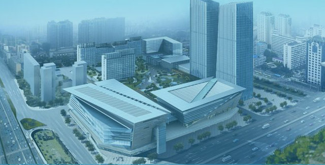
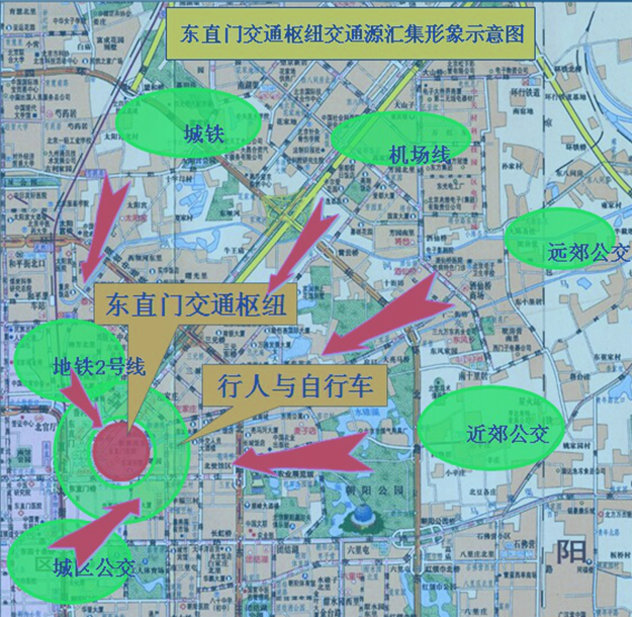

东直门枢纽简介

东直门交通枢纽暨东华广场商务区项目地处北京市东城区东直门立交桥东北角，规划总占地15.44公顷，建筑用地10.60公顷，总建筑面积59万平方米，其中交通枢纽建筑面积7.8万平方米。枢纽首层公交场站、集散大厅及地下一层轨道换乘厅已投入使用，地下二层规划的400个停车位的小汽车停车场尚在建设中。

东直门交通枢纽于2008年7月19日正式投入运营，配套设置了无障碍设施和完善的指路引导标志系统。作为本市连接密云、怀柔、平谷和顺义等远郊区县主要的公交线路集中地，2014年，东直门枢纽日均客流量已达25万人次。实现了地铁2号线、13号线、机场快轨、市区公交、市郊长途、出租车、自行车等多种交通方式的立体换乘，具有多功能和人车分流的特点，可为广大乘客提供舒适、便捷的换乘环境，突出了人性化的服务理念，解决了原东直门地区公交站点分散，与轨道交通换乘距离较远，乘客换乘不便的问题。东直门交通枢纽是根据市委、市政府加快建立“政府主导、建管合一、管用分离”的新型建管机制建立运营的我市第一个综合交通枢纽。
东直门交通枢纽目前已运营区域占地面积39454平方米；建筑面积34856平方米；房屋面积6367平方米，共计84间；管理面积42999平方米；站台面积3070平方米。客运分公司4个；进驻车队10个；进场线路16条；总配车数量703辆；发车位数量16个；日均发车班次4651次；驻车数量77辆。
作为本市连接密云、怀柔、平谷和顺义等远郊区县主要的公交线路集中地，2014年，东直门枢纽日均客流量已达25万人次。